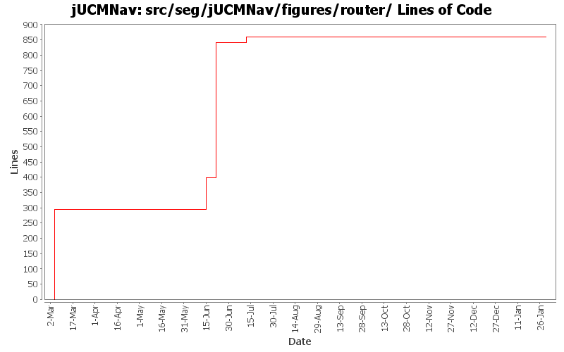

Summary Period: 2005-03-04 to 2006-01-29
[root]/src/seg/jUCMNav/figures/router

Total Lines Of Code:
859 (2006-03-31 18:01)
| Author | Changes | Lines of Code | Lines per Change |
|---|---|---|---|
| Totals | 63 (100.0%) | 859 (100.0%) | 13.6 |
| jkealey | 31 (49.2%) | 564 (65.7%) | 18.1 |
| etremblay | 21 (33.3%) | 295 (34.3%) | 14.0 |
| jpdaigle | 7 (11.1%) | 0 (0.0%) | 0.0 |
| jmcmanus | 2 (3.2%) | 0 (0.0%) | 0.0 |
| jfroy | 2 (3.2%) | 0 (0.0%) | 0.0 |
Merge of GRL branch with the main trunk
0 lines of code changed in:
fixed javadoc
0 lines of code changed in:
Merge grl branch with the main trunk
Major modification of the metamodel (URN_08.mdl) (Added GRL metamodel, New interfaces that define common element in GRL and UCM, Modified UCM-Map package to implement the new interfaces (some associations and attributes have been refactored using the interfaces), Map is now called UCMmap (to resolve conflict with java.util.map in the implementation), Removed Path Graph)
Modification of the code that used the metamodel.
Started modification of jUCMNav to support GRL.
0 lines of code changed in:
made code more robust where Gunter reported an exception.
0 lines of code changed in:
cleaned seg.jUCMNav.figures.* and added javadoc. fixed a few regression bugs I introduced earlier today. made startpoint figure use center of bounds instead of using absolute offset. cleaned JUCMNavFigure from having redudant info. merged AndFork/AndJoin figures and OrFork/OrJoin figures as they were identical.
19 lines of code changed in:
JP: javadoc improvements on private-visibility methods
0 lines of code changed in:
bug 359 - mode now affects all editors;
undiscovered regression bug - stub labels sometimes didn't move;
cleaned&commented (javadoc) seg.jUCMNav.editparts;
moved remaining stub code from PathNodeEditPart to StubEditPart;
moved remaiining condition code form LabelEditPart to ConditionEditPart
0 lines of code changed in:
had broken connects
0 lines of code changed in:
and fork / and join figures
0 lines of code changed in:
bug 335: palette wording
bug 344: extracted more strings
0 lines of code changed in:
bug 320 - connection router had a bug with loops. bug fixed and should be even more efficient!
0 lines of code changed in:
bug 320 - loops; to investigate: given this preliminary version, what is okay, what is not. I think it looks pretty good but I haven't tested everything thoroughly. I know that it is too restrictive concerning paths that have a stub that should be considered to contain a start/end point, but for simplicity's sake, I think the workarounds are sufficient.
0 lines of code changed in:
bug 320 - reimplemented the connection router. the new version uses JP's query framework and is a listener to model objects. is also a step forward for the implementation of nicer and joins/forks. furthermore, in my only test, this new implementation makes the command tests run 39% faster.
441 lines of code changed in:
bug 191 - connects -> improvements in deletion. i think there remains a bug where you do something, then undo it, then select a timer and the app causes an error because the connect path isn't the 2nd input, its the 1st. unable to repro but asking for testing.
0 lines of code changed in:
bugs 194, 195: timeout paths and waitingplace/timer conditions. took 10 minutes to implement timeout paths, 5 hours to get the friggen timeout path figure refreshed when moving path nodes that are not directly linked. i have not managed to succeed in replicating the behaviour for stub labels.
0 lines of code changed in:
JP: Mega commit! Fixed all 120 javadoc warnings on public members, and made the build script a tiny bit less verbose.
Added meaningful javadoc location where possible.
0 lines of code changed in:
strengthed code for managing loops; however, after two hours of debugging, I have come to the conclusion we might need to recode the connection router from scratch (400 lines) with loops and updates in mind; the code inserted to increase performance makes it hell to debug and is too restrictive; currently disabled one aspect. should not crash but there are still many issues that remain with loops.
0 lines of code changed in:
improved connection router performance
104 lines of code changed in:
Can now add Conditions on NodeConnections. Few bugs: delete is broken and need a ChangeNameCommand for direct editting.
0 lines of code changed in:
bug 182, bug 227 - moved componentref figure to figure package, updated color for new model. you will have to manually set the filled checkbox in your existing files.
0 lines of code changed in:
(25 more)
Generated by StatCVS 0.2.4